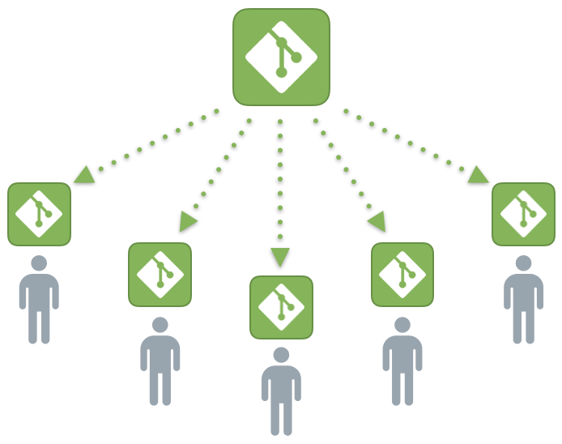

Branches
Branches in Git are incredibly lightweight as well. They are simply pointers to a specific commit - nothing more.
This is why many Git enthusiasts chant the mantra: branch early, and branch often
Because there is no storage / memory overhead with making many branches, it's easier to logically divide up your work than have big beefy branches.
When we start mixing branches and commits, we will see how these two features combine. For now though, just remember that a branch essentially says "I want to include the work of this commit and all parent commits.
Read more about branches here
Branches and Merging
The first method to combine work that we will examine is git merge . Merging in Git creates a special commit that has two unique parents. A commit with two parents essentially means "I want to include all the work from this parent over here and this one over here, and the set of all their parents.
Here we have two branches; each has one commit that's unique. This means that neither branch includes the entire set of "work" in the repository that we have done. Let's fix that with merge.
What is Git
Performance Security/ Flexibility/ Version control with Git
By far, the most widely used modern version control system in the world today is Git. Git is a mature, actively maintained open source project originally developed in 2005 by Linus Torvalds, the famous creator of the Linux operating system kernel. A staggering number of software projects rely on Git for version control, including commercial projects as well as open source. Developers who have worked with Git are well represented in the pool of available software development talent and it works well on a wide range of operating systems and IDEs (Integrated Development Environments).
Having a distributed architecture, Git is an example of a DVCS (hence Distributed Version Control System). Rather than have only one single place for the full version history of the software as is common in once-popular version control systems like CVS or Subversion (also known as SVN), in Git, every developer's working copy of the code is also a repository that can contain the full history of all changes.
Other Articles

